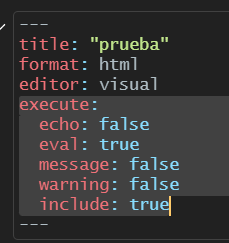

Tablas en reportes dinámicos
Sesión del sábado, 12 de octubre de 2024
Objetivo de la práctica
El objetivo de esta guía práctica es aprender cómo generar, reportar y referenciar tablas en documentos dinámicos mediante Quarto.
Recursos de la práctica
En esta práctica trabajaremos con un subconjunto de datos previamente procesados derivados de las encuestas realizadas en diferentes países por el Latin American Public Opinion Proyect (LAPOP) en su ola del 2018. Para este ejercicio, obtendremos directamente esta base desde internet. No obstante, también tienes la opción de acceder a la misma información a través del siguiente enlace: LAPOP 2018. Desde allí, podrás descargar el archivo que contiene el subconjunto procesado de la base de datos LAPOP 2018.
Crear un documento Quarto
Recordemos que, para generar un archivo en quarto, hacemos lo siguiente:

Chunks
Para integrar código de R en un archivo Quarto usamos los chunks, que son trozos de código dentro de nuestra hoja. Estos permiten hacer análisis dentro del documento visualizando los resultados en el documento final. Un chunk se especifica mediante una línea de código inicial ```{r}, y se cierra con ```
Los chunks se ven así dentro del .qmd:
```{r}
1 + 1
```Insertar chunks
Hay tres formas de insertar chunks:
Pulsar
⌘⌥Ien macOS oControl + Alt + Ien WindowsPulsa el botón “Insert” en la parte superior de la ventana del editor
- Escribirlo manualmente
Nombre de chunk
Para añadir un nombre, inclúyelo inmediatamente después de la {r en la primera línea del chunk. Los nombres no pueden contener espacios, pero sí guiones bajos y guiones.
Importante: Todos los nombres de chunk de tu documento deben ser únicos.
```{r nombre-chunk}
1 + 1
```Opciones de chunk
Hay distintas opciones diferentes que puedes establecer para cada chunk. Puedes ver una lista completa en la Guía de referencia de RMarkdown o en el sitio web de knitr. Estos recursos se crearon inicialmente para RMarkdown, pero también son aplicables a Quarto.
En Quarto, las opciones del chunk van inmediatamente después de la sección {r}. Para especificar una opción, se debe partir con #|, luego la opción y luego el valor lógico. Por ejemplo:
```{r}
#| message: false
#| echo: true
1 + 1
```Otra forma de hacerlo es configurar las opciones generales de todos los chunks que hagamos al inicio del documento en el YAML:

De esta manera ya no es necesario indicar en cada chunk las opciones, y se aplicaran las configuraciones generales que indicamos al comienzo.
Preparación de datos
Comencemos por preparar nuestros datos. Iniciamos cargando las librerías necesarias.
pacman::p_load(tidyverse, # Manipulacion datos
sjmisc, # Descriptivos
knitr, # Render y tablas
kableExtra, # Formateo tablas
summarytools, # Tablas
sjPlot, # Tablas y gráficos
stargazer, # Tablas
janitor, # Tablas y formateo
crosstable, # Tablas
table1 # Tablas
)
options(scipen = 999) # para desactivar notacion cientifica
rm(list = ls()) # para limpiar el entorno de trabajoCargamos los datos desde internet.
load(url("https://github.com/cursos-metodos-facso/datos-ejemplos/raw/main/lapop_proc_2018.RData")) #Cargar base de datos
# Un pequeño procesamiento para algunas variables que usaremos más adelante
lapop <- lapop %>% mutate(across(c("gini", "gdp"), ~ as.numeric(.))) A continuación, exploramos la base de datos lapop.
names(lapop) # Nombre de columnas [1] "year" "pais" "pais_name" "idnum" "upm"
[6] "strata" "wt" "weight1500" "sexo" "edad"
[11] "educ" "l1" "ideologia_f" "empleo" "decile"
[16] "it1" "prot3" "aoj12" "b2" "b3"
[21] "b4" "b10a" "b12" "b20" "b20a"
[26] "b21" "b21a" "n9" "n11" "n15"
[31] "ros4" "ing4" "eff1" "pn4" "exc7"
[36] "pol1" "vb2" "gini" "gdp" dim(lapop) # Dimensiones[1] 23386 39Contamos con 39 variables (columnas) y 23.386 observaciones (filas).
Tablas con Kable
La mejor forma de generar tablas para documentos dinámicos es con la función kable() del paquete knitr y las distintas funciones de formateo que ofrece el paquete kableExtra. Esto se debe a que kable() y las funciones de kableExtra aplican estilo y formato a un objeto de R (generalmente un data.frame). Esto quiere decir que para hacer una tabla debemos:
Procesar nuestros datos de manera que genermos un objeto tipo
data.frame(u otros similares) con la información requerida. Esto lo hacemos a través dedplyro algún otro paquete dedicado al manejo de datos.Aplicar el estilo y el formateo que queramos para ese objeto. Esto lo hacemos a través de
kableExtra(hay otras opciones, por ejemploflextable, pero no es tan buena).
Ejemplifiquemos con nuestros datos.
Primero, generaremos un objeto llamado tab1 que usaremos como contenido de la tabla. Este objeto tendrá la distribución de it1 (confianza interpersonal) por país, es decir, es una tabla bivariada.
tab1 <- lapop %>%
group_by(pais, it1) %>% # agrupamos por pais y variable
summarise(n = n()) %>% # contamos por categ de respuesta
mutate(prop = round((n / sum(n)) * 100, 2)) %>% # porcentaje
na.omit() %>% # borramos NA
pivot_wider(id_cols = pais, names_from = it1, values_from = prop) # convertimos a formato ancho
tab1# A tibble: 15 × 5
# Groups: pais [15]
pais `1` `2` `3` `4`
<chr> <dbl> <dbl> <dbl> <dbl>
1 ARG 7.98 21.7 45.1 23.2
2 BOL 13.6 40.5 31.9 11.6
3 BRA 12.9 45.4 19.8 19.8
4 CHL 10.6 23.4 40.5 24.6
5 COL 9.14 25.7 34.4 29.0
6 CRI 8.53 22.6 34.6 32.2
7 DOM 11.3 29.0 31.3 24.0
8 ECU 11.7 37.8 32.2 17.3
9 HND 14.0 28.6 22.8 29.3
10 MEX 11.2 33.2 31.5 20.7
11 PAN 14.2 34 31.5 18.5
12 PER 14.9 42.3 31.2 10.6
13 PRY 9.7 24.1 35.6 26.9
14 SLV 8.6 32.3 26.3 29.2
15 URY 7.08 18.7 43.8 27.1Creemos nuestra tabla. Usemos primero la función kable() directamente:
tab1 %>% kable()| pais | 1 | 2 | 3 | 4 |
|---|---|---|---|---|
| ARG | 7.98 | 21.66 | 45.09 | 23.23 |
| BOL | 13.56 | 40.49 | 31.87 | 11.59 |
| BRA | 12.88 | 45.39 | 19.76 | 19.76 |
| CHL | 10.56 | 23.44 | 40.54 | 24.60 |
| COL | 9.14 | 25.74 | 34.40 | 28.98 |
| CRI | 8.53 | 22.58 | 34.64 | 32.25 |
| DOM | 11.28 | 29.02 | 31.27 | 24.01 |
| ECU | 11.68 | 37.83 | 32.22 | 17.29 |
| HND | 14.04 | 28.65 | 22.82 | 29.29 |
| MEX | 11.20 | 33.16 | 31.46 | 20.70 |
| PAN | 14.24 | 34.00 | 31.49 | 18.47 |
| PER | 14.92 | 42.34 | 31.23 | 10.59 |
| PRY | 9.70 | 24.09 | 35.64 | 26.86 |
| SLV | 8.60 | 32.30 | 26.27 | 29.19 |
| URY | 7.08 | 18.72 | 43.77 | 27.07 |
Ahora tenemos una tabla, pero es muy simple y poco presentable. Especifiquemos opciones de formato:
format: para especificar formato de la tabla (html, markdown, latex)aling: para especificar alineacion de las celdas (‘r’=derecha, ‘c’=centro, ‘l’=izquierda),col.names: para nombres de columnas visibles en la tabla, se ingresan como un vectorc()
tab1 %>%
kable(
format = "html",
align = "c",
col.names = c("País", "Nada confiable", "Poco confiable", "Algo confiable", "Muy confiable"))| País | Nada confiable | Poco confiable | Algo confiable | Muy confiable |
|---|---|---|---|---|
| ARG | 7.98 | 21.66 | 45.09 | 23.23 |
| BOL | 13.56 | 40.49 | 31.87 | 11.59 |
| BRA | 12.88 | 45.39 | 19.76 | 19.76 |
| CHL | 10.56 | 23.44 | 40.54 | 24.60 |
| COL | 9.14 | 25.74 | 34.40 | 28.98 |
| CRI | 8.53 | 22.58 | 34.64 | 32.25 |
| DOM | 11.28 | 29.02 | 31.27 | 24.01 |
| ECU | 11.68 | 37.83 | 32.22 | 17.29 |
| HND | 14.04 | 28.65 | 22.82 | 29.29 |
| MEX | 11.20 | 33.16 | 31.46 | 20.70 |
| PAN | 14.24 | 34.00 | 31.49 | 18.47 |
| PER | 14.92 | 42.34 | 31.23 | 10.59 |
| PRY | 9.70 | 24.09 | 35.64 | 26.86 |
| SLV | 8.60 | 32.30 | 26.27 | 29.19 |
| URY | 7.08 | 18.72 | 43.77 | 27.07 |
Ahora agregemos otros elementos importantes, como el título, estilo y fuente a la tabla:
caption: para dar titulo de la tablakable_classic(): para dar estiloadd_footnote(): para agregar fuente o pie a la tabla
tab1 %>%
kable(format = "html",
align = "c",
col.names = c("País", "Nada confiable", "Poco confiable", "Algo confiable", "Muy confiable"),
caption = "Tabla 1. Confianza interpersonal según país") %>%
kableExtra::kable_classic() %>%
kableExtra::add_footnote(label = "Fuente: Elaboración propia en base a LAPOP 2018.")| País | Nada confiable | Poco confiable | Algo confiable | Muy confiable |
|---|---|---|---|---|
| ARG | 7.98 | 21.66 | 45.09 | 23.23 |
| BOL | 13.56 | 40.49 | 31.87 | 11.59 |
| BRA | 12.88 | 45.39 | 19.76 | 19.76 |
| CHL | 10.56 | 23.44 | 40.54 | 24.60 |
| COL | 9.14 | 25.74 | 34.40 | 28.98 |
| CRI | 8.53 | 22.58 | 34.64 | 32.25 |
| DOM | 11.28 | 29.02 | 31.27 | 24.01 |
| ECU | 11.68 | 37.83 | 32.22 | 17.29 |
| HND | 14.04 | 28.65 | 22.82 | 29.29 |
| MEX | 11.20 | 33.16 | 31.46 | 20.70 |
| PAN | 14.24 | 34.00 | 31.49 | 18.47 |
| PER | 14.92 | 42.34 | 31.23 | 10.59 |
| PRY | 9.70 | 24.09 | 35.64 | 26.86 |
| SLV | 8.60 | 32.30 | 26.27 | 29.19 |
| URY | 7.08 | 18.72 | 43.77 | 27.07 |
| a Fuente: Elaboración propia en base a LAPOP 2018. |
¿Muy grande? También podemos ajustar el ancho que ocupa la tabla, el tamaño de la letra y la posición:
full_width: para indicar si la tabla cubre todo el ancho o no (TRUE/FALSE)position: para indicar posición de la tabla en el documentofont_size: para indicar tamaño de la letra
tabla1 <- tab1 %>%
kable(format = "html",
align = "c",
col.names = c("País", "Nada confiable", "Poco confiable", "Algo confiable", "Muy confiable"),
caption = "Tabla 1. Confianza interpersonal según país") %>%
kableExtra::kable_classic(full_width = FALSE, position = "center", font_size = 14) %>%
kableExtra::add_footnote(label = "Fuente: Elaboración propia en base a LAPOP 2018.")
tabla1| País | Nada confiable | Poco confiable | Algo confiable | Muy confiable |
|---|---|---|---|---|
| ARG | 7.98 | 21.66 | 45.09 | 23.23 |
| BOL | 13.56 | 40.49 | 31.87 | 11.59 |
| BRA | 12.88 | 45.39 | 19.76 | 19.76 |
| CHL | 10.56 | 23.44 | 40.54 | 24.60 |
| COL | 9.14 | 25.74 | 34.40 | 28.98 |
| CRI | 8.53 | 22.58 | 34.64 | 32.25 |
| DOM | 11.28 | 29.02 | 31.27 | 24.01 |
| ECU | 11.68 | 37.83 | 32.22 | 17.29 |
| HND | 14.04 | 28.65 | 22.82 | 29.29 |
| MEX | 11.20 | 33.16 | 31.46 | 20.70 |
| PAN | 14.24 | 34.00 | 31.49 | 18.47 |
| PER | 14.92 | 42.34 | 31.23 | 10.59 |
| PRY | 9.70 | 24.09 | 35.64 | 26.86 |
| SLV | 8.60 | 32.30 | 26.27 | 29.19 |
| URY | 7.08 | 18.72 | 43.77 | 27.07 |
| a Fuente: Elaboración propia en base a LAPOP 2018. |
En este caso, nuestro ejemplo fue para hacer una tabla bivariada con dos variables categóricas. Sin embargo, podríamos hacer lo mismo para una variable continua y crear una tabla bivariada con los principales estadisticos descriptivos.
Creemos el objeto tab2, el cual serán los estadísticos descriptivos de la variable edad por país en nuestra base de datos.
::: {.cell}
tab2 <- lapop %>%
group_by(pais) %>%
summarise(
n = n(), # Tamaño muestral
min = min(edad, na.rm = T), # Mínimo
max = max(edad, na.rm = T), # Máximo
media = round(mean(edad, na.rm = T), 2), # Media redondeada a 2 digitos
sd = round(sd(edad, na.rm = T), 2), # Desviación estándar redondeada a 2 digitos
mediana = median(edad, na.rm = T), # Mediana
cv = round((media/sd)*100, 2) # Coeficiente de variación redondeado a 2 digi
):::
Y ahora apliquemos el formato con kable() y las funcionalidades del paquete de kableExtra:
tabla2 <- tab2 %>%
kable(format = "html",
align = "c",
col.names = c("País", "Tamaño muestral", "Mínimo", "Máximo", "Media", "Desv. estándar", "Mediana", "Coef. variación"),
caption = "Tabla 2. Edad según país") %>%
kableExtra::kable_classic(full_width = FALSE, position = "center", font_size = 14) %>%
kableExtra::add_footnote(label = "Fuente: Elaboración propia en base a LAPOP 2018.")
tabla2| País | Tamaño muestral | Mínimo | Máximo | Media | Desv. estándar | Mediana | Coef. variación |
|---|---|---|---|---|---|---|---|
| ARG | 1528 | 16 | 90 | 41.84 | 17.75 | 39.0 | 235.72 |
| BOL | 1682 | 18 | 89 | 39.52 | 16.30 | 36.0 | 242.45 |
| BRA | 1498 | 16 | 92 | 39.15 | 16.25 | 37.0 | 240.92 |
| CHL | 1638 | 18 | 92 | 42.22 | 16.80 | 40.0 | 251.31 |
| COL | 1663 | 18 | 90 | 40.36 | 16.33 | 37.0 | 247.15 |
| CRI | 1501 | 18 | 89 | 40.50 | 16.88 | 37.0 | 239.93 |
| DOM | 1516 | 18 | 87 | 40.05 | 16.98 | 37.0 | 235.87 |
| ECU | 1533 | 16 | 92 | 38.16 | 17.10 | 35.0 | 223.16 |
| HND | 1560 | 18 | 89 | 38.17 | 16.26 | 34.0 | 234.75 |
| MEX | 1580 | 18 | 88 | 42.09 | 17.03 | 40.0 | 247.15 |
| PAN | 1559 | 18 | 93 | 39.56 | 16.17 | 37.5 | 244.65 |
| PER | 1521 | 18 | 91 | 38.85 | 15.54 | 36.0 | 250.00 |
| PRY | 1515 | 18 | 87 | 40.00 | 16.28 | 37.0 | 245.70 |
| SLV | 1511 | 18 | 99 | 39.99 | 16.62 | 38.0 | 240.61 |
| URY | 1581 | 18 | 95 | 46.19 | 17.89 | 44.0 | 258.19 |
| a Fuente: Elaboración propia en base a LAPOP 2018. |
Para ver todas las funcionalidades y estilos que se pueden generar con kableExtra, ver aquí.
Tablas con otros paquetes
Si bien la combinación de crear nuestra tabla (probablemente con dplyr) y formatear con kableExtra es la mejor forma para reportar tablas, existen otras funciones. Las funciones varían de acuerdo a qué es lo que se quiere reportar, es decir, si es una variable categorica o númerica y si es el reporte debe ser univariado o bivariado. De todos modos, solo algunas funciones tienen una salida directa en HTML (pensando en que se utilizarán en Quarto), por lo que algunas veces solo nos ahorraremos el procesamiento, el formateo deberemos hacerlo igual.
La principal virtud de estas funciones es que nos ahorra hacer el procesamiento de la tabla. Sin embargo, el desafío es que debemos saber bien qué es lo que queremos reportar para utilizar la función adecuada.
A continuación, presentaremos algunas de las funcionas más conocidas, dividiendo si son para tablas univariadas o bivariadas.
Vamos a crear una versión recortada de lapop para ejemplifcar cada función:
# Creemos una version de lapop solo con algunas variables como ejemplo
data_example <- lapop %>%
select(pais, it1, edad, sexo, gini, gdp)Funciones para tablas univariadas
Estas tablas suelen incluir estadísticas descriptivas de una sola variable como medias, medianas, desviaciones estándar, entre otras.
summarytools:
summarytools::dfSummary():Genera un resumen univariado completo de cada variable en el dataset, con estadísticas, frecuencia de valores y gráficos.
summarytools::dfSummary(data_example) %>%
summarytools::view(method = "render") Data Frame Summary
summarytools::dfSummary
Dimensions: 23386 x 6Duplicates: 16464
| No | Variable | Label | Stats / Values | Freqs (% of Valid) | Graph | Valid | Missing | |||||||||||||||||||||||||||||||||||||||||||||||||||||||
|---|---|---|---|---|---|---|---|---|---|---|---|---|---|---|---|---|---|---|---|---|---|---|---|---|---|---|---|---|---|---|---|---|---|---|---|---|---|---|---|---|---|---|---|---|---|---|---|---|---|---|---|---|---|---|---|---|---|---|---|---|---|---|
| 1 | pais [character] | País |
|
|
 |
23386 (100.0%) | 0 (0.0%) | |||||||||||||||||||||||||||||||||||||||||||||||||||||||
| 2 | it1 [numeric] | Confianza Interpersonal |
|
|
 |
22783 (97.4%) | 603 (2.6%) | |||||||||||||||||||||||||||||||||||||||||||||||||||||||
| 3 | edad [numeric] | Edad |
|
81 distinct values |  |
23372 (99.9%) | 14 (0.1%) | |||||||||||||||||||||||||||||||||||||||||||||||||||||||
| 4 | sexo [factor] | Sexo |
|
|
 |
23373 (99.9%) | 13 (0.1%) | |||||||||||||||||||||||||||||||||||||||||||||||||||||||
| 5 | gini [numeric] |
|
15 distinct values |  |
23386 (100.0%) | 0 (0.0%) | ||||||||||||||||||||||||||||||||||||||||||||||||||||||||
| 6 | gdp [numeric] |
|
15 distinct values |  |
23386 (100.0%) | 0 (0.0%) |
Generated by summarytools 1.0.1 (R version 4.3.3)
2024-11-12
summarytools::descr():Proporciona estadísticas descriptivas para variables numéricas.
summarytools::descr(data_example$edad) %>%
summarytools::view(method = "render")Error : Can't find summarytoolsDescriptive Statistics
value
Label: EdadN: 23386
| value | |
|---|---|
| Mean | 40.46 |
| Std.Dev | 16.80 |
| Min | 16.00 |
| Q1 | 27.00 |
| Median | 38.00 |
| Q3 | 52.00 |
| Max | 99.00 |
| MAD | 17.79 |
| IQR | 25.00 |
| CV | 0.42 |
| Skewness | 0.57 |
| SE.Skewness | 0.02 |
| Kurtosis | -0.58 |
| N.Valid | 23372 |
| Pct.Valid | 99.94 |
Generated by summarytools 1.0.1 (R version 4.3.3)
2024-11-12
stargazer:
stargazer::stargazer(): Para reportar estadísticas descriptivas.
stargazer(as.data.frame(data_example), type = "html", summary.stat = c("mean", "sd", "min", "max"))| Statistic | Mean | St. Dev. | Min | Max |
| it1 | 2.694 | 0.953 | 1 | 4 |
| edad | 40.461 | 16.798 | 16 | 99 |
| gini | 45.778 | 4.043 | 38.000 | 53.300 |
| gdp | 8.748 | 4.278 | 2.475 | 16.038 |
psych:
psych::describe(): Calcula estadísticas descriptivas adicionales, como curtosis y asimetría.
psych::describe(data_example) %>%
kable() %>%
kable_styling(full_width = TRUE)| vars | n | mean | sd | median | trimmed | mad | min | max | range | skew | kurtosis | se | |
|---|---|---|---|---|---|---|---|---|---|---|---|---|---|
| pais* | 1 | 23386 | 7.950911 | 4.3253391 | 8.000000 | 7.935810 | 5.930400 | 1.00000 | 15.00000 | 14.00000 | 0.0201754 | -1.2152000 | 0.0282841 |
| it1 | 2 | 22783 | 2.694333 | 0.9532423 | 3.000000 | 2.742909 | 1.482600 | 1.00000 | 4.00000 | 3.00000 | -0.1424032 | -0.9507169 | 0.0063154 |
| edad | 3 | 23372 | 40.460551 | 16.7983821 | 38.000000 | 39.158199 | 17.791200 | 16.00000 | 99.00000 | 83.00000 | 0.5674996 | -0.5770780 | 0.1098802 |
| sexo* | 4 | 23373 | 1.502246 | 0.5000057 | 2.000000 | 1.502808 | 0.000000 | 1.00000 | 2.00000 | 1.00000 | -0.0089842 | -2.0000048 | 0.0032705 |
| gini | 5 | 23386 | 45.777846 | 4.0429160 | 45.700000 | 45.896141 | 4.151280 | 38.00000 | 53.30000 | 15.30000 | -0.2035078 | -0.6251471 | 0.0264373 |
| gdp | 6 | 23386 | 8.747801 | 4.2779214 | 7.997761 | 8.634054 | 6.045964 | 2.47517 | 16.03793 | 13.56276 | 0.2534969 | -1.2525404 | 0.0279740 |
sjmisc:
sjmisc::frq(): Para tablas de frecuencias detalladas de variables categóricas. Incluye labels.
sjmisc::frq(data_example$it1) %>%
kable()
|
table1:
table1::table1(): Permite ver tanto variables categoricas como numericas en la misma tabla de manera estética
table1::table1(~ factor(sexo) + edad + gini + gdp, data = data_example)| Overall (N=23386) |
|
|---|---|
| factor(sexo) | |
| Hombre | 11634 (49.7%) |
| Mujer | 11739 (50.2%) |
| Missing | 13 (0.1%) |
| Edad | |
| Mean (SD) | 40.5 (16.8) |
| Median [Min, Max] | 38.0 [16.0, 99.0] |
| Missing | 14 (0.1%) |
| gini | |
| Mean (SD) | 45.8 (4.04) |
| Median [Min, Max] | 45.7 [38.0, 53.3] |
| gdp | |
| Mean (SD) | 8.75 (4.28) |
| Median [Min, Max] | 8.00 [2.48, 16.0] |
Funciones para tablas bivariadas
Las tablas bivariadas permiten explorar relaciones entre pares de variables, útiles para comparar medias o analizar frecuencias conjuntas en tablas de contingencia.
sjPlot:
sjPlot::tab_xtab(): Produce tablas cruzadas de frecuencias y porcentajes, y es útil para comparar variables categóricas entre grupos.
sjPlot::tab_xtab(data_example$pais, data_example$it1, show.row.prc = TRUE)| País | Confianza Interpersonal |
Total | |||
|---|---|---|---|---|---|
| Nada confiable | Poco confiable | Algo confiable | Muy confiable | ||
| ARG | 122 8.1 % |
331 22.1 % |
689 46 % |
355 23.7 % |
1497 100 % |
| BOL | 228 13.9 % |
681 41.5 % |
536 32.7 % |
195 11.9 % |
1640 100 % |
| BRA | 193 13.2 % |
680 46.4 % |
296 20.2 % |
296 20.2 % |
1465 100 % |
| CHL | 173 10.7 % |
384 23.6 % |
664 40.9 % |
403 24.8 % |
1624 100 % |
| COL | 152 9.3 % |
428 26.2 % |
572 35 % |
482 29.5 % |
1634 100 % |
| CRI | 128 8.7 % |
339 23 % |
520 35.4 % |
484 32.9 % |
1471 100 % |
| DOM | 171 11.8 % |
440 30.4 % |
474 32.7 % |
364 25.1 % |
1449 100 % |
| ECU | 179 11.8 % |
580 38.2 % |
494 32.5 % |
265 17.5 % |
1518 100 % |
| HND | 219 14.8 % |
447 30.2 % |
356 24.1 % |
457 30.9 % |
1479 100 % |
| MEX | 177 11.6 % |
524 34.4 % |
497 32.6 % |
327 21.4 % |
1525 100 % |
| PAN | 222 14.5 % |
530 34.6 % |
491 32.1 % |
288 18.8 % |
1531 100 % |
| PER | 227 15.1 % |
644 42.7 % |
475 31.5 % |
161 10.7 % |
1507 100 % |
| PRY | 147 10.1 % |
365 25 % |
540 37 % |
407 27.9 % |
1459 100 % |
| SLV | 130 8.9 % |
488 33.5 % |
397 27.3 % |
441 30.3 % |
1456 100 % |
| URY | 112 7.3 % |
296 19.4 % |
692 45.3 % |
428 28 % |
1528 100 % |
| Total | 2580 11.3 % |
7157 31.4 % |
7693 33.8 % |
5353 23.5 % |
22783 100 % |
| χ2=1306.960 · df=42 · Cramer's V=0.138 · p=0.000 | |||||
summarytools:
summarytools::ctable(): Para tablas de contingencia que incluyen porcentajes y frecuencias, con opciones de personalización.
summarytools::ctable(data_example$pais, data_example$sexo) %>%
summarytools::view(method = "render")Error : Can't find summarytools
Error : Can't find summarytoolsCross-Tabulation, Row Proportions
data_example$pais * data_example$sexo
| data_example$sexo | ||||||||||||||||
|---|---|---|---|---|---|---|---|---|---|---|---|---|---|---|---|---|
| data_example$pais | Hombre | Mujer | <NA> | Total | ||||||||||||
| ARG | 758 | ( | 49.6% | ) | 770 | ( | 50.4% | ) | 0 | ( | 0.00% | ) | 1528 | ( | 100.0% | ) |
| BOL | 846 | ( | 50.3% | ) | 836 | ( | 49.7% | ) | 0 | ( | 0.00% | ) | 1682 | ( | 100.0% | ) |
| BRA | 748 | ( | 49.9% | ) | 750 | ( | 50.1% | ) | 0 | ( | 0.00% | ) | 1498 | ( | 100.0% | ) |
| CHL | 813 | ( | 49.6% | ) | 824 | ( | 50.3% | ) | 1 | ( | 0.06% | ) | 1638 | ( | 100.0% | ) |
| COL | 830 | ( | 49.9% | ) | 833 | ( | 50.1% | ) | 0 | ( | 0.00% | ) | 1663 | ( | 100.0% | ) |
| CRI | 750 | ( | 50.0% | ) | 751 | ( | 50.0% | ) | 0 | ( | 0.00% | ) | 1501 | ( | 100.0% | ) |
| DOM | 753 | ( | 49.7% | ) | 761 | ( | 50.2% | ) | 2 | ( | 0.13% | ) | 1516 | ( | 100.0% | ) |
| ECU | 760 | ( | 49.6% | ) | 764 | ( | 49.8% | ) | 9 | ( | 0.59% | ) | 1533 | ( | 100.0% | ) |
| HND | 778 | ( | 49.9% | ) | 782 | ( | 50.1% | ) | 0 | ( | 0.00% | ) | 1560 | ( | 100.0% | ) |
| MEX | 775 | ( | 49.1% | ) | 805 | ( | 50.9% | ) | 0 | ( | 0.00% | ) | 1580 | ( | 100.0% | ) |
| PAN | 782 | ( | 50.2% | ) | 777 | ( | 49.8% | ) | 0 | ( | 0.00% | ) | 1559 | ( | 100.0% | ) |
| PER | 758 | ( | 49.8% | ) | 762 | ( | 50.1% | ) | 1 | ( | 0.07% | ) | 1521 | ( | 100.0% | ) |
| PRY | 755 | ( | 49.8% | ) | 760 | ( | 50.2% | ) | 0 | ( | 0.00% | ) | 1515 | ( | 100.0% | ) |
| SLV | 755 | ( | 50.0% | ) | 756 | ( | 50.0% | ) | 0 | ( | 0.00% | ) | 1511 | ( | 100.0% | ) |
| URY | 773 | ( | 48.9% | ) | 808 | ( | 51.1% | ) | 0 | ( | 0.00% | ) | 1581 | ( | 100.0% | ) |
| Total | 11634 | ( | 49.7% | ) | 11739 | ( | 50.2% | ) | 13 | ( | 0.06% | ) | 23386 | ( | 100.0% | ) |
Generated by summarytools 1.0.1 (R version 4.3.3)
2024-11-12
crosstable:
crosstable::crosstable(): También produce tablas de continencia con opciones de personalización.
crosstable::crosstable(data_example, pais, by = sexo, margin=c("row", "col"), total = "both") %>%
kable() %>%
kable_styling(full_width = TRUE)| .id | label | variable | Hombre | Mujer | NA | Total |
|---|---|---|---|---|---|---|
| pais | País | ARG | 758 (6.52% / 49.61%) | 770 (6.56% / 50.39%) | 0 | 1528 (6.53%) |
| pais | País | BOL | 846 (7.27% / 50.30%) | 836 (7.12% / 49.70%) | 0 | 1682 (7.19%) |
| pais | País | BRA | 748 (6.43% / 49.93%) | 750 (6.39% / 50.07%) | 0 | 1498 (6.41%) |
| pais | País | CHL | 813 (6.99% / 49.66%) | 824 (7.02% / 50.34%) | 1 | 1638 (7.00%) |
| pais | País | COL | 830 (7.13% / 49.91%) | 833 (7.10% / 50.09%) | 0 | 1663 (7.11%) |
| pais | País | CRI | 750 (6.45% / 49.97%) | 751 (6.40% / 50.03%) | 0 | 1501 (6.42%) |
| pais | País | DOM | 753 (6.47% / 49.74%) | 761 (6.48% / 50.26%) | 2 | 1516 (6.48%) |
| pais | País | ECU | 760 (6.53% / 49.87%) | 764 (6.51% / 50.13%) | 9 | 1533 (6.56%) |
| pais | País | HND | 778 (6.69% / 49.87%) | 782 (6.66% / 50.13%) | 0 | 1560 (6.67%) |
| pais | País | MEX | 775 (6.66% / 49.05%) | 805 (6.86% / 50.95%) | 0 | 1580 (6.76%) |
| pais | País | PAN | 782 (6.72% / 50.16%) | 777 (6.62% / 49.84%) | 0 | 1559 (6.67%) |
| pais | País | PER | 758 (6.52% / 49.87%) | 762 (6.49% / 50.13%) | 1 | 1521 (6.50%) |
| pais | País | PRY | 755 (6.49% / 49.83%) | 760 (6.47% / 50.17%) | 0 | 1515 (6.48%) |
| pais | País | SLV | 755 (6.49% / 49.97%) | 756 (6.44% / 50.03%) | 0 | 1511 (6.46%) |
| pais | País | URY | 773 (6.64% / 48.89%) | 808 (6.88% / 51.11%) | 0 | 1581 (6.76%) |
| pais | País | Total | 11634 (49.78%) | 11739 (50.22%) | 13 | 23386 (100.00%) |
table1:
table1::table1(): También se puede utilizar agrupando las variables (numericas o categoricas) por alguna variable categórica.
table1::table1(~ factor(sexo) + edad + gini + gdp | pais, data = data_example)| ARG (N=1528) |
BOL (N=1682) |
BRA (N=1498) |
CHL (N=1638) |
COL (N=1663) |
CRI (N=1501) |
DOM (N=1516) |
ECU (N=1533) |
HND (N=1560) |
MEX (N=1580) |
PAN (N=1559) |
PER (N=1521) |
PRY (N=1515) |
SLV (N=1511) |
URY (N=1581) |
Overall (N=23386) |
|
|---|---|---|---|---|---|---|---|---|---|---|---|---|---|---|---|---|
| factor(sexo) | ||||||||||||||||
| Hombre | 758 (49.6%) | 846 (50.3%) | 748 (49.9%) | 813 (49.6%) | 830 (49.9%) | 750 (50.0%) | 753 (49.7%) | 760 (49.6%) | 778 (49.9%) | 775 (49.1%) | 782 (50.2%) | 758 (49.8%) | 755 (49.8%) | 755 (50.0%) | 773 (48.9%) | 11634 (49.7%) |
| Mujer | 770 (50.4%) | 836 (49.7%) | 750 (50.1%) | 824 (50.3%) | 833 (50.1%) | 751 (50.0%) | 761 (50.2%) | 764 (49.8%) | 782 (50.1%) | 805 (50.9%) | 777 (49.8%) | 762 (50.1%) | 760 (50.2%) | 756 (50.0%) | 808 (51.1%) | 11739 (50.2%) |
| Missing | 0 (0%) | 0 (0%) | 0 (0%) | 1 (0.1%) | 0 (0%) | 0 (0%) | 2 (0.1%) | 9 (0.6%) | 0 (0%) | 0 (0%) | 0 (0%) | 1 (0.1%) | 0 (0%) | 0 (0%) | 0 (0%) | 13 (0.1%) |
| Edad | ||||||||||||||||
| Mean (SD) | 41.8 (17.8) | 39.5 (16.3) | 39.1 (16.2) | 42.2 (16.8) | 40.4 (16.3) | 40.5 (16.9) | 40.0 (17.0) | 38.2 (17.1) | 38.2 (16.3) | 42.1 (17.0) | 39.6 (16.2) | 38.8 (15.5) | 40.0 (16.3) | 40.0 (16.6) | 46.2 (17.9) | 40.5 (16.8) |
| Median [Min, Max] | 39.0 [16.0, 90.0] | 36.0 [18.0, 89.0] | 37.0 [16.0, 92.0] | 40.0 [18.0, 92.0] | 37.0 [18.0, 90.0] | 37.0 [18.0, 89.0] | 37.0 [18.0, 87.0] | 35.0 [16.0, 92.0] | 34.0 [18.0, 89.0] | 40.0 [18.0, 88.0] | 37.5 [18.0, 93.0] | 36.0 [18.0, 91.0] | 37.0 [18.0, 87.0] | 38.0 [18.0, 99.0] | 44.0 [18.0, 95.0] | 38.0 [16.0, 99.0] |
| Missing | 0 (0%) | 0 (0%) | 0 (0%) | 1 (0.1%) | 0 (0%) | 0 (0%) | 2 (0.1%) | 9 (0.6%) | 0 (0%) | 0 (0%) | 1 (0.1%) | 1 (0.1%) | 0 (0%) | 0 (0%) | 0 (0%) | 14 (0.1%) |
| gini | ||||||||||||||||
| Mean (SD) | 41.1 (0) | 44.6 (0) | 53.3 (0) | 44.4 (0) | 49.7 (0) | 48.3 (0) | 45.7 (0) | 44.7 (0) | 49.4 (0) | 46.3 (0) | 49.9 (0) | 43.3 (0) | 48.5 (0) | 38.0 (0) | 39.5 (0) | 45.8 (4.04) |
| Median [Min, Max] | 41.1 [41.1, 41.1] | 44.6 [44.6, 44.6] | 53.3 [53.3, 53.3] | 44.4 [44.4, 44.4] | 49.7 [49.7, 49.7] | 48.3 [48.3, 48.3] | 45.7 [45.7, 45.7] | 44.7 [44.7, 44.7] | 49.4 [49.4, 49.4] | 46.3 [46.3, 46.3] | 49.9 [49.9, 49.9] | 43.3 [43.3, 43.3] | 48.5 [48.5, 48.5] | 38.0 [38.0, 38.0] | 39.5 [39.5, 39.5] | 45.7 [38.0, 53.3] |
| gdp | ||||||||||||||||
| Mean (SD) | 13.1 (0) | 3.29 (0) | 8.58 (0) | 13.9 (0) | 6.27 (0) | 12.5 (0) | 8.00 (0) | 5.95 (0) | 2.48 (0) | 9.95 (0) | 14.9 (0) | 6.57 (0) | 5.87 (0) | 3.92 (0) | 16.0 (0) | 8.75 (4.28) |
| Median [Min, Max] | 13.1 [13.1, 13.1] | 3.29 [3.29, 3.29] | 8.58 [8.58, 8.58] | 13.9 [13.9, 13.9] | 6.27 [6.27, 6.27] | 12.5 [12.5, 12.5] | 8.00 [8.00, 8.00] | 5.95 [5.95, 5.95] | 2.48 [2.48, 2.48] | 9.95 [9.95, 9.95] | 14.9 [14.9, 14.9] | 6.57 [6.57, 6.57] | 5.87 [5.87, 5.87] | 3.92 [3.92, 3.92] | 16.0 [16.0, 16.0] | 8.00 [2.48, 16.0] |
dplyr y janitor:
- dplyr +
janitor::tabyl(): Puedes hacer resúmenes bivariados personalizados con count() o group_by(), y tabyl() genera tablas de contingencia de frecuencias para un vistazo rápido.
data_example %>%
janitor::tabyl(pais, it1) %>% # Esto reemplaza el procesamiento, buena alternativa
kable() %>%
kable_styling(full_width = TRUE)| pais | 1 | 2 | 3 | 4 | NA_ |
|---|---|---|---|---|---|
| ARG | 122 | 331 | 689 | 355 | 31 |
| BOL | 228 | 681 | 536 | 195 | 42 |
| BRA | 193 | 680 | 296 | 296 | 33 |
| CHL | 173 | 384 | 664 | 403 | 14 |
| COL | 152 | 428 | 572 | 482 | 29 |
| CRI | 128 | 339 | 520 | 484 | 30 |
| DOM | 171 | 440 | 474 | 364 | 67 |
| ECU | 179 | 580 | 494 | 265 | 15 |
| HND | 219 | 447 | 356 | 457 | 81 |
| MEX | 177 | 524 | 497 | 327 | 55 |
| PAN | 222 | 530 | 491 | 288 | 28 |
| PER | 227 | 644 | 475 | 161 | 14 |
| PRY | 147 | 365 | 540 | 407 | 56 |
| SLV | 130 | 488 | 397 | 441 | 55 |
| URY | 112 | 296 | 692 | 428 | 53 |
Autoreferenciar elementos dentro un documento dinámico
Una de las ventajas de usar documentos dinámicos con Quarto es que podemos autoreferenciar los elementos que creamos dentro del mismo documento.
¿Autoreferenciar?
Esto se refiere que, si en un documento creamos una tabla, podemos citarlo o referenciarlo en el texto que escribamos, generando un enlace que al pincharlo llevará a dicha figura (en el orden establecido en el documento).
Para hacer esto debemos darle un label al chunk en donde producimos la tabla o gráfico en nuestro documento. Tomemos por ejemplo la misma tabla1 que generamos anteriormente, pero ahora les daremos un nombre al chunk en donde ejecutaremos dichos elementos.
¿Qué nombre le ponemos? hay que considerar que cuando es una tabla debemos nombrar al chunk con el prefijo tbl- antes del nombre respectivo.
¿Cómo las referenciamos? para referenciar tablas o debemos usar el prefijo @ antes del nombre que le dimos al elemento.
a. Tablas
Por ejemplo, si queremos referenciar a nuestra tabla1, en el chunk en donde la ejecutemos debemos indicar:
```{r}
#| label: tbl-confianza
tabla1
```tabla1
names(lapop) [1] "year" "pais" "pais_name" "idnum" "upm"
[6] "strata" "wt" "weight1500" "sexo" "edad"
[11] "educ" "l1" "ideologia_f" "empleo" "decile"
[16] "it1" "prot3" "aoj12" "b2" "b3"
[21] "b4" "b10a" "b12" "b20" "b20a"
[26] "b21" "b21a" "n9" "n11" "n15"
[31] "ros4" "ing4" "eff1" "pn4" "exc7"
[36] "pol1" "vb2" "gini" "gdp" | País | Nada confiable | Poco confiable | Algo confiable | Muy confiable |
|---|---|---|---|---|
| ARG | 7.98 | 21.66 | 45.09 | 23.23 |
| BOL | 13.56 | 40.49 | 31.87 | 11.59 |
| BRA | 12.88 | 45.39 | 19.76 | 19.76 |
| CHL | 10.56 | 23.44 | 40.54 | 24.60 |
| COL | 9.14 | 25.74 | 34.40 | 28.98 |
| CRI | 8.53 | 22.58 | 34.64 | 32.25 |
| DOM | 11.28 | 29.02 | 31.27 | 24.01 |
| ECU | 11.68 | 37.83 | 32.22 | 17.29 |
| HND | 14.04 | 28.65 | 22.82 | 29.29 |
| MEX | 11.20 | 33.16 | 31.46 | 20.70 |
| PAN | 14.24 | 34.00 | 31.49 | 18.47 |
| PER | 14.92 | 42.34 | 31.23 | 10.59 |
| PRY | 9.70 | 24.09 | 35.64 | 26.86 |
| SLV | 8.60 | 32.30 | 26.27 | 29.19 |
| URY | 7.08 | 18.72 | 43.77 | 27.07 |
| a Fuente: Elaboración propia en base a LAPOP 2018. |
En este caso, a nuestra tabla le daremos el nombre de confianza más el prefijo tbl-. Y para referenciar dentro de un texto a la tabla usamos: @tbl-confianza.
Texto de ejemplo:
En la Tabla 1 se muestra la distribución porcentual del grado de confianza interpersonal por país.
b. Resultados
También podemos referenciar a resultados estadísticos que hayamos realizado con anterioridad en nuestro documento.
Como ejemplo, obtengamos la correlación entre el índice de Gini de los países y su producto interno bruto (PIB) y lo guardamos en un objeto M.
M <- cor(lapop$gini, lapop$gdp)
M[1] -0.1125219Para referenciar este resultado, usamos en el texto:
`r `Dentro de las comillas ’ ’ y después de la letra r, indicamos el nombre del objeto que contiene un resultado. En este caso, para referenciar el resultado indicamos:

Texto de ejemplo:
El coeficiente de correlación de Pearson entre el índice de Gini y el producto interno bruto es negativo y pequeño =
'r M'.
Texto de resultado:
El coeficiente de correlación de Pearson entre el índice de Gini y el producto interno bruto es negativo y pequeño = -0.1125219.
Esta opción es especialmente útil cuando estamos escribiendo un análisis de resultados, ya que ante cualqueier contingencia con los datos, no es necesario cambiar los datos en el texto.
Un uso más avanzado de esta opción es hacer condicional el texto en base al objeto guardado. Por ejemplo:
El coeficiente de correlación de Pearson entre el índice de Gíni y el producto interno bruto es
'r if(M > 0){"positivo"} else {"negativo"}'y pequeño ='r M'.
Y el resultado sería:
El coeficiente de correlación de Pearson entre el índice de Gíni y el producto interno bruto es negativo y pequeño = -0.1125219.
Resumen
Hoy aprendimos a generar y presentar tablas en documentos dinámicos con Quarto, así como también a autoreferenciar elementos dentro de un documento qmd. En detalle, aprendímos:
- Generación y presentación de tablas en Quarto a través de
kable()ykableExtra - Otras opciones de tablas rapidas para distintos tipos de análisis
- Cómo autoreferenciar elementos dentro un documento Quarto.